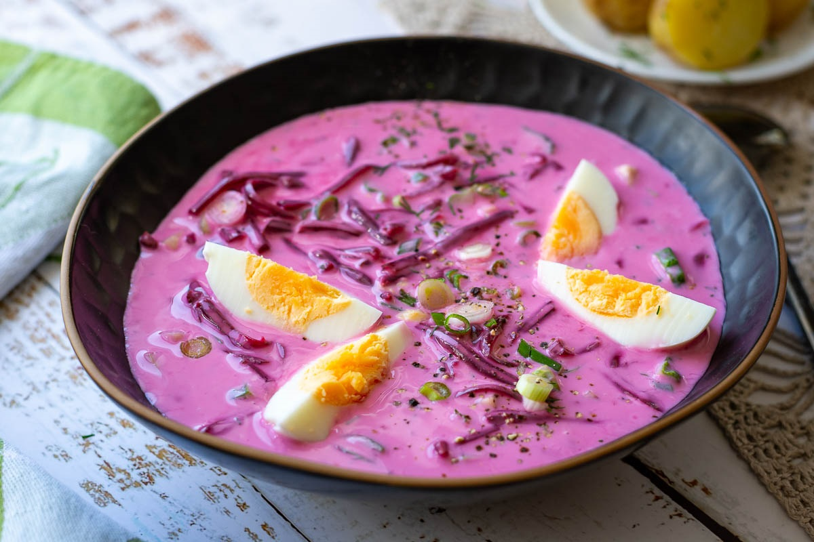

Suggestion:
Since cold beet soup is, well, cold, it would primarily be the perfect meal on a hot summer day (though you shouldn't be shoo-d off from trying it only and only if its hot!). The refreshing properties of cold beet soup will surely leave you more than satisfied!

-
List of ingredients
- 4 large eggs
- 1 quart of kefir
- 500g of beetroots
- 1 large cucumber
- fresh dill
- fresh chives
- salt and pepper to taste
- A few medium potatoes
-
Preparation
-
Preparing the ingredients
- Take the large eggs, and hard boil them. Once they've cooled, dice them up.
- Take the potatoes, peel them and dice them into small chunks. Bring some salted water to a boil and let the potatoes boil until they're soft, then drain the water from the potatoes.
- peel and shred the beetroots using a grater
- Quarter and dice the cucumber
- Chop up the chives and some of the dill.
-
-
Making the dish
-
Putting it all together
- Take a large pot, and add all of the prepared ingredients apart from the potatoes. Season to taste with salt and pepper, and stir well. Put in a refirgerator to cool before serving. Sprinkle some chopped chives and dill onto the soup and serve with hot, boiled potatoes.
-
-
Cultural Importance
Šaltibarščiai stands the test of time since its first appearance in the 17th century, being a core part of Lithuanian cuisine. It's vibrant pink color and distinct yet refreshing flavour has united many Eastern-European countries together through its taste, and has spread outside of Europe to be experienced by the world!